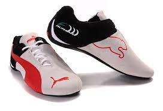
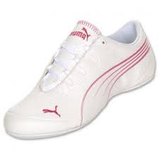
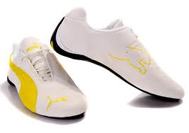
“Siempre he creído que si trabajas, los resultados vendrán solos. No hago las cosas a medias, porque sé que si lo hago entonces solo puedo esperar tener resultados a medias.”
“He fallado una y otra vez en mi vida, por eso he conseguido el éxito.”
.
“Algunas personas quieren que algo ocurra, otras sueñan con qué pasará, otras hacen que suceda.”
MICHAEL JORDAN
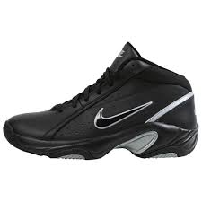
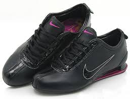
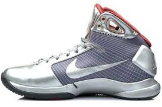
“He fallado más de 9000 tiros en mi carrera. He perdido casi 300 juegos. 26 veces han confiado en mi para tomar el tiro que ganaba el juego y lo he fallado. He fallado una y otra, y otra vez en mi vida. Pero nunca me he dado por vencido. Y es por eso que he tenido éxito en la vida.”
Nunca he pensado en las consecuencias de fallar un gran tiro... cuando se piensa en las consecuencias, se esta pensando en un resultado negativo
Puedo aceptar fallar, pero no puedo aceptar el no intentarlo
MICHAEL JORDAN
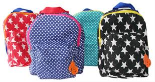
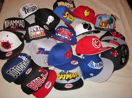
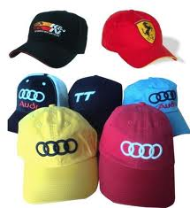
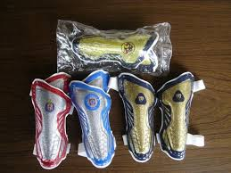
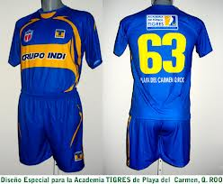
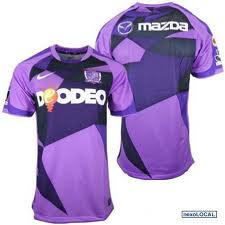
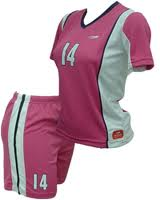
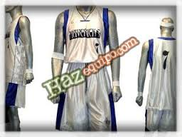
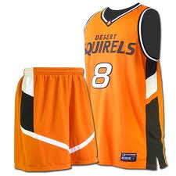
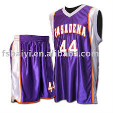
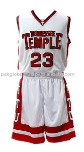
Mis héroes son y fueron mis padres, no me imagino teniendo a otras personas como héroes
El juego es mi esposa. Exige lealtad y responsabilidad, y me devuelve sentirme realizado y paz
No hay nada igual en el mundo, esa sensación de tener el balón en los últimos segundos cuando el tiempo se agota lentamente, saltas y suspendido en el aire aciertas el tiro. Eso es control total. Simplemente no hay otro sentimiento como él. Ninguno
MICHAEL JORDAN
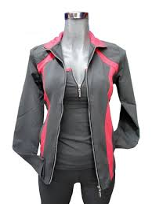
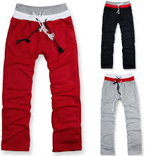
Mi actitud es tal que, si me empujas hacia algo que piensas es una debilidad, entonces daré vuelta esa debilidad percibida y la convertiré en una fortaleza
Juego para ganar, durante las practicas o en un juego real, y no voy a dejar nada en el camino, de mi o mi entusiasmo para ganar
La mejor evaluación de un jugador de baloncesto que puedo conseguir es mirándolo a los ojos y ver lo asustado que está
MCHAEL JORDAN

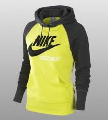
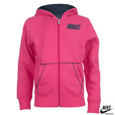
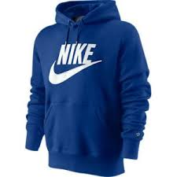
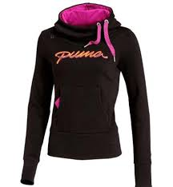
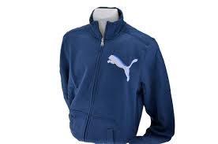
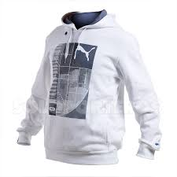
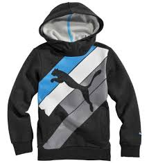
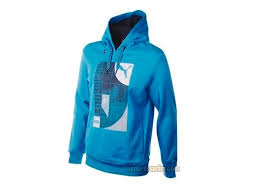
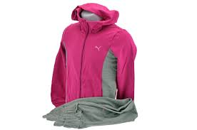
Nunca me preocupo del problema, sólo de la solución
No sé cómo es para vosotros los terrícolas pero de donde yo vengo la fuerza viene de la mente
Se juega para ganar, para divertirse, y para hacer felices a los demás.
MICHAEL JORDAN